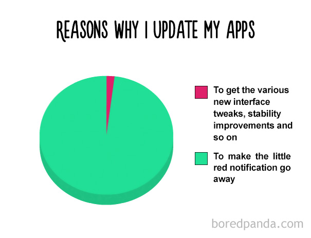
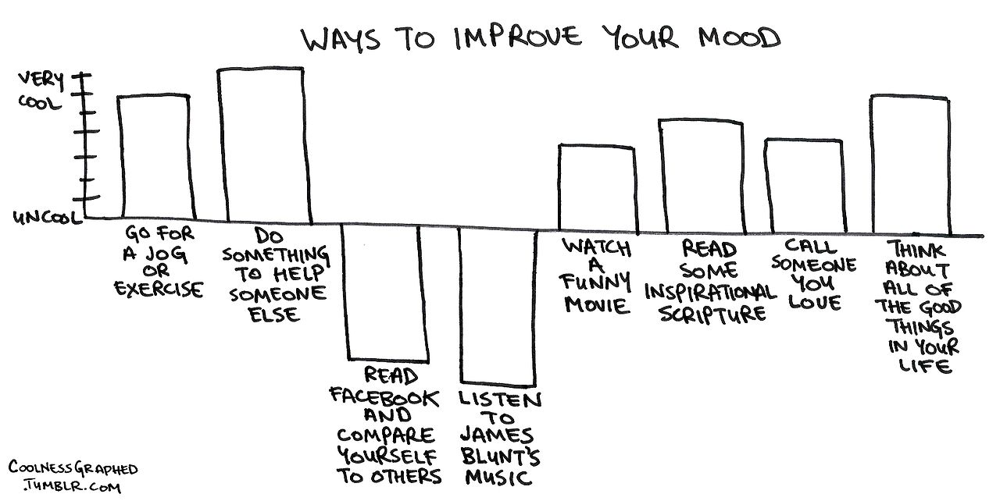
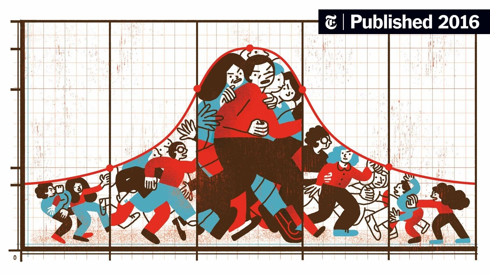

Rappresentazione grafica
I dati elaborati con la distribuzione di frequenza iniziano già a dirci qualcosa, tuttavia l'immagine spesso è più esplicativa di mille numeri in tabella, motivo per cui nelle ricerche scientifiche e nelle indagini di mercato di vario genere troviamo spesso i dati rappresentati sotto forma di grafico piuttosto che di tabella.
Non tutti i grafici però si adattano alle nostre scale di misura e a volte optare per una forma di grafico può essere più utile di un'altra per comunicare i risultati della nostra ricerca. Le forme di grafico che più vedrete in questo corso sono:
- grafico a torta: si rafigura come un cerchio diviso in settori, per questo si presta bene a rappresentare frequenze percentuali. Utilizzabile per la rappresentazione sia delle variabili qualitative sia di quelle quantitative, anche se le prime sono da preferire alle seconde, in quanto più efficace (generalmente meno attributi e quindi immagine più pulita).
- grafico a barre: : come è possibile vedere dall'immagine in basso, le barre non sono attaccate l'una con l'altra e sono associate ad attributi, non a valori numerici. Questo indica che il grafico a barre è utilizzabile solo per rappresentare le variabili qualitative, con gli attributi sull'asse delle ascisse e le frequenze sull'asse delle ordinate. Questo tipo di rappresentazione è da preferire al grafico a torta quando si vogliono fare confronti sui dati e le frequenze sono vicine tra loro. Inoltre quando la variabile è ordinale, consente di avere un'immagine più diretta sulla distribuzione della frequenza e ordine.
- poligono di frequenza: la linea continua che vedete qua in basso è ottenuta unendo i punti che rappresentano le frequenze di ciascun valore della variabile. Essendo la linea continua significa che i valori della variabile non solo sono ordinati, ma lo scarto tra un valore e l'altro è sempre la stessa per tutti i valori. Detto in altri termini, solo le variabili quantitative sono rappresentabili tramite poligono di frequenza.


